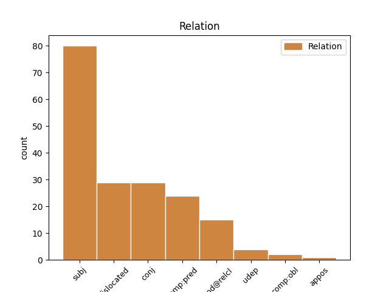
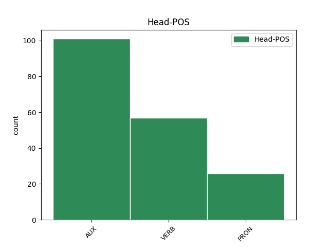
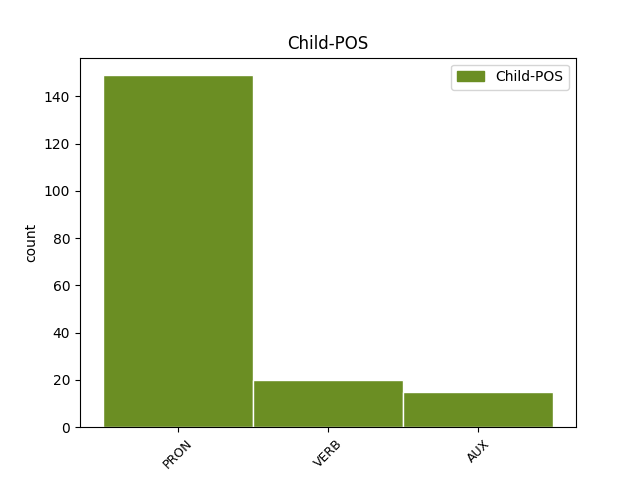

Distribution of features within this leaf



Agreement Rules sorted by frequency.
- When the dependent token is the subject(subj) of the head token, and the dependent token is PRON.
1 Li bi PRON PRON Definite=Def|Deixis=Prox|NounClass=Wol7|Number=Sing|Person=3|PronType=Rel 6 subj _ _
2 ëpp _ _ _ _ 0 _ _ _
3 ci _ _ _ _ 0 _ _ _
4 seen _ _ _ _ 0 _ _ _
5 bind _ _ _ _ 0 _ _ _
6 génnul génn VERB VERB Mood=Ind|Number=Sing|Person=3|Polarity=Neg|VerbForm=Fin 0 _ _ _
7 mbirum _ _ _ _ 0 _ _ _
8 diine _ _ _ _ 0 _ _ _
9 ak _ _ _ _ 0 _ _ _
10 di _ _ _ _ 0 _ _ _
11 jéem _ _ _ _ 0 _ _ _
12 a _ _ _ _ 0 _ _ _
13 jëmale _ _ _ _ 0 _ _ _
14 nit _ _ _ _ 0 _ _ _
15 ñi _ _ _ _ 0 _ _ _
16 ci _ _ _ _ 0 _ _ _
17 lépp _ _ _ _ 0 _ _ _
18 lu _ _ _ _ 0 _ _ _
19 Lislaam _ _ _ _ 0 _ _ _
20 digle _ _ _ _ 0 _ _ _
21 . _ _ _ _ 0 _ _ _
1 Bu _ _ _ _ 0 _ _ _
2 ñaareel _ _ _ _ 0 _ _ _
3 bi _ _ _ _ 0 _ _ _
4 it _ _ _ _ 0 _ _ _
5 nag _ _ _ _ 0 _ _ _
6 moom _ _ _ _ 0 _ _ _
7 , _ _ _ _ 0 _ _ _
8 li bi PRON PRON Definite=Def|Deixis=Prox|NounClass=Wol7|Number=Sing|Person=3|PronType=Rel 17 dislocated _ _
9 tax _ _ _ _ 0 _ _ _
10 Muusaa _ _ _ _ 0 _ _ _
11 indee _ _ _ _ 0 _ _ _
12 ko _ _ _ _ 0 _ _ _
13 nii _ _ _ _ 0 _ _ _
14 , _ _ _ _ 0 _ _ _
15 mujjantal _ _ _ _ 0 _ _ _
16 ba _ _ _ _ 0 _ _ _
17 la la AUX INFL FocusType=Compl|Mood=Ind|Number=Sing|Person=3 0 _ _ _
18 di _ _ _ _ 0 _ _ _
19 dàkk _ _ _ _ 0 _ _ _
20 , _ _ _ _ 0 _ _ _
21 mu _ _ _ _ 0 _ _ _
22 di _ _ _ _ 0 _ _ _
23 baati _ _ _ _ 0 _ _ _
24 " _ _ _ _ 0 _ _ _
25 Asta _ _ _ _ 0 _ _ _
26 Waalo _ _ _ _ 0 _ _ _
27 " _ _ _ _ 0 _ _ _
28 . _ _ _ _ 0 _ _ _
1 Nit _ _ _ _ 0 _ _ _
2 ku _ _ _ _ 0 _ _ _
3 ne _ _ _ _ 0 _ _ _
4 , _ _ _ _ 0 _ _ _
5 ci _ _ _ _ 0 _ _ _
6 biir _ _ _ _ 0 _ _ _
7 réewam _ _ _ _ 0 _ _ _
8 , _ _ _ _ 0 _ _ _
9 am _ _ _ _ 0 _ _ _
10 na _ _ _ _ 0 _ _ _
11 sañ-sañu _ _ _ _ 0 _ _ _
12 bokk _ _ _ _ 0 _ _ _
13 ca _ _ _ _ 0 _ _ _
14 njiit _ _ _ _ 0 _ _ _
15 ya _ _ _ _ 0 _ _ _
16 di _ _ _ _ 0 _ _ _
17 saytu _ _ _ _ 0 _ _ _
18 doxalinu _ _ _ _ 0 _ _ _
19 réew _ _ _ _ 0 _ _ _
20 ma _ _ _ _ 0 _ _ _
21 , _ _ _ _ 0 _ _ _
22 mu _ _ _ _ 0 _ _ _
23 a _ _ _ _ 0 _ _ _
24 xam _ _ _ _ 0 _ _ _
25 moom moom PRON PRON Number=Sing|Person=3|PronType=Prs 28 comp:pred _ _
26 ci _ _ _ _ 0 _ _ _
27 boppam _ _ _ _ 0 _ _ _
28 la la AUX COP Mood=Ind|Number=Sing|Person=3|VerbForm=Fin 0 _ _ _
29 , _ _ _ _ 0 _ _ _
30 walla _ _ _ _ 0 _ _ _
31 mu _ _ _ _ 0 _ _ _
32 dénk _ _ _ _ 0 _ _ _
33 baatam _ _ _ _ 0 _ _ _
34 ay _ _ _ _ 0 _ _ _
35 ndaw _ _ _ _ 0 _ _ _
36 yu _ _ _ _ 0 _ _ _
37 mu _ _ _ _ 0 _ _ _
38 tànn _ _ _ _ 0 _ _ _
39 ci _ _ _ _ 0 _ _ _
40 coobareem _ _ _ _ 0 _ _ _
41 . _ _ _ _ 0 _ _ _
1 Ñépp _ _ _ _ 0 _ _ _
2 am _ _ _ _ 0 _ _ _
3 nañu _ _ _ _ 0 _ _ _
4 sañ-sañ _ _ _ _ 0 _ _ _
5 ci _ _ _ _ 0 _ _ _
6 yem _ _ _ _ 0 _ _ _
7 añu _ _ _ _ 0 _ _ _
8 ab _ _ _ _ 0 _ _ _
9 liggéey _ _ _ _ 0 _ _ _
10 , _ _ _ _ 0 _ _ _
11 su _ _ _ _ 0 _ _ _
12 fekkee _ _ _ _ 0 _ _ _
13 ne _ _ _ _ 0 _ _ _
14 ñu _ _ _ _ 0 _ _ _
15 a _ _ _ _ 0 _ _ _
16 yem _ _ _ _ 0 _ _ _
17 liggéey _ _ _ _ 0 _ _ _
18 , _ _ _ _ 0 _ _ _
19 ci _ _ _ _ 0 _ _ _
20 lu bu PRON PRON NounClass=Wol7|Number=Sing|Person=3|PronType=Rel 0 _ _ _
21 àndul ànd VERB VERB Mood=Ind|Number=Sing|Person=3|Polarity=Neg|VerbForm=Fin 20 mod@relcl _ _
22 ak _ _ _ _ 0 _ _ _
23 benn _ _ _ _ 0 _ _ _
24 xàjjaatle _ _ _ _ 0 _ _ _
25 . _ _ _ _ 0 _ _ _
1 Jabet _ _ _ _ 0 _ _ _
2 mën _ _ _ _ 0 _ _ _
3 na _ _ _ _ 0 _ _ _
4 a _ _ _ _ 0 _ _ _
5 jàpp _ _ _ _ 0 _ _ _
6 siddit _ _ _ _ 0 _ _ _
7 yi _ _ _ _ 0 _ _ _
8 , _ _ _ _ 0 _ _ _
9 ba _ _ _ _ 0 _ _ _
10 ki _ _ _ _ 0 _ _ _
11 mu _ _ _ _ 0 _ _ _
12 dal _ _ _ _ 0 _ _ _
13 dootul _ _ _ _ 0 _ _ _
14 am _ _ _ _ 0 _ _ _
15 yëg-yëg _ _ _ _ 0 _ _ _
16 ci _ _ _ _ 0 _ _ _
17 yaramam _ _ _ _ 0 _ _ _
18 , _ _ _ _ 0 _ _ _
19 maanaam _ _ _ _ 0 _ _ _
20 du _ _ _ _ 0 _ _ _
21 yëg _ _ _ _ 0 _ _ _
22 lu bu PRON PRON NounClass=Wol7|Number=Sing|Person=3|PronType=Rel 0 _ _ _
23 tàng _ _ _ _ 0 _ _ _
24 mbaa _ _ _ _ 0 _ _ _
25 lu bu PRON PRON NounClass=Wol7|Number=Sing|Person=3|PronType=Rel 22 conj _ _
26 sedd _ _ _ _ 0 _ _ _
27 . _ _ _ _ 0 _ _ _
1 Ci _ _ _ _ 0 _ _ _
2 wirgo _ _ _ _ 0 _ _ _
3 bii _ _ _ _ 0 _ _ _
4 , _ _ _ _ 0 _ _ _
5 li _ _ _ _ 0 _ _ _
6 tax _ _ _ _ 0 _ _ _
7 natt _ _ _ _ 0 _ _ _
8 bi _ _ _ _ 0 _ _ _
9 jéggi _ _ _ _ 0 _ _ _
10 dayo _ _ _ _ 0 _ _ _
11 jógewul jóge VERB VERB Mood=Ind|Number=Sing|Person=3|Polarity=Neg|VerbForm=Fin 0 _ _ _
12 ci _ _ _ _ 0 _ _ _
13 pànkreyaa _ _ _ _ 0 _ _ _
14 bi _ _ _ _ 0 _ _ _
15 , _ _ _ _ 0 _ _ _
16 ndax _ _ _ _ 0 _ _ _
17 mën _ _ _ _ 0 _ _ _
18 na na AUX INFL Aspect=Perf|Mood=Ind|Number=Sing|Person=3 11 conj _ _
19 a _ _ _ _ 0 _ _ _
20 defar _ _ _ _ 0 _ _ _
21 « _ _ _ _ 0 _ _ _
22 insuline _ _ _ _ 0 _ _ _
23 » _ _ _ _ 0 _ _ _
24 , _ _ _ _ 0 _ _ _
25 waaye _ _ _ _ 0 _ _ _
26 yaram _ _ _ _ 0 _ _ _
27 wi _ _ _ _ 0 _ _ _
28 a _ _ _ _ 0 _ _ _
29 ko _ _ _ _ 0 _ _ _
30 mënul _ _ _ _ 0 _ _ _
31 a _ _ _ _ 0 _ _ _
32 jëfandikoo _ _ _ _ 0 _ _ _
33 ni _ _ _ _ 0 _ _ _
34 mu _ _ _ _ 0 _ _ _
35 ware _ _ _ _ 0 _ _ _
36 . _ _ _ _ 0 _ _ _
1 Yoon _ _ _ _ 0 _ _ _
2 warul war VERB VERB Mood=Ind|Number=Sing|Person=3|Polarity=Neg|VerbForm=Fin 0 _ _ _
3 tëral _ _ _ _ 0 _ _ _
4 lu _ _ _ _ 0 _ _ _
5 dul _ _ _ _ 0 _ _ _
6 ay _ _ _ _ 0 _ _ _
7 daan _ _ _ _ 0 _ _ _
8 yu _ _ _ _ 0 _ _ _
9 nga _ _ _ _ 0 _ _ _
10 xam _ _ _ _ 0 _ _ _
11 ne _ _ _ _ 0 _ _ _
12 , _ _ _ _ 0 _ _ _
13 fés _ _ _ _ 0 _ _ _
14 na _ _ _ _ 0 _ _ _
15 ni _ _ _ _ 0 _ _ _
16 yem _ _ _ _ 0 _ _ _
17 nañu _ _ _ _ 0 _ _ _
18 kepp _ _ _ _ 0 _ _ _
19 , _ _ _ _ 0 _ _ _
20 te _ _ _ _ 0 _ _ _
21 amul am VERB VERB Mood=Ind|Number=Sing|Person=3|Polarity=Neg|VerbForm=Fin 2 conj _ _
22 kenn _ _ _ _ 0 _ _ _
23 ku _ _ _ _ 0 _ _ _
24 ñu _ _ _ _ 0 _ _ _
25 mën _ _ _ _ 0 _ _ _
26 daan _ _ _ _ 0 _ _ _
27 , _ _ _ _ 0 _ _ _
28 lu _ _ _ _ 0 _ _ _
29 dul _ _ _ _ 0 _ _ _
30 ci _ _ _ _ 0 _ _ _
31 kow _ _ _ _ 0 _ _ _
32 ab _ _ _ _ 0 _ _ _
33 àtte _ _ _ _ 0 _ _ _
34 bu _ _ _ _ 0 _ _ _
35 am _ _ _ _ 0 _ _ _
36 , _ _ _ _ 0 _ _ _
37 ñu _ _ _ _ 0 _ _ _
38 taxawal _ _ _ _ 0 _ _ _
39 ko _ _ _ _ 0 _ _ _
40 lu _ _ _ _ 0 _ _ _
41 jiitu _ _ _ _ 0 _ _ _
42 tooñeel _ _ _ _ 0 _ _ _
43 gi _ _ _ _ 0 _ _ _
44 , _ _ _ _ 0 _ _ _
45 te _ _ _ _ 0 _ _ _
46 fekk _ _ _ _ 0 _ _ _
47 ñu _ _ _ _ 0 _ _ _
48 ngi _ _ _ _ 0 _ _ _
49 ko _ _ _ _ 0 _ _ _
50 di _ _ _ _ 0 _ _ _
51 doxal _ _ _ _ 0 _ _ _
52 ni _ _ _ _ 0 _ _ _
53 mu _ _ _ _ 0 _ _ _
54 ware _ _ _ _ 0 _ _ _
55 ci _ _ _ _ 0 _ _ _
56 yoon _ _ _ _ 0 _ _ _
57 . _ _ _ _ 0 _ _ _
1 Li _ _ _ _ 0 _ _ _
2 ëpp _ _ _ _ 0 _ _ _
3 ci _ _ _ _ 0 _ _ _
4 lu _ _ _ _ 0 _ _ _
5 mu _ _ _ _ 0 _ _ _
6 di _ _ _ _ 0 _ _ _
7 jàng _ _ _ _ 0 _ _ _
8 du _ _ _ _ 0 _ _ _
9 weesu _ _ _ _ 0 _ _ _
10 ijji _ _ _ _ 0 _ _ _
11 ak _ _ _ _ 0 _ _ _
12 nafar _ _ _ _ 0 _ _ _
13 lu _ _ _ _ 0 _ _ _
14 mu _ _ _ _ 0 _ _ _
15 xamul xam VERB VERB Mood=Ind|Number=Sing|Person=3|Polarity=Neg|VerbForm=Fin 0 _ _ _
16 lu bu PRON PRON NounClass=Wol7|Number=Sing|Person=3|PronType=Rel 15 udep _ _
17 mu _ _ _ _ 0 _ _ _
18 di _ _ _ _ 0 _ _ _
19 tekki _ _ _ _ 0 _ _ _
20 . _ _ _ _ 0 _ _ _
1 Te _ _ _ _ 0 _ _ _
2 loolu _ _ _ _ 0 _ _ _
3 di _ _ _ _ 0 _ _ _
4 lu bu PRON PRON NounClass=Wol7|Number=Sing|Person=3|PronType=Rel 0 _ _ _
5 am _ _ _ _ 0 _ _ _
6 lu _ _ _ _ 0 _ _ _
7 kenn _ _ _ _ 0 _ _ _
8 dul di AUX AUX Aspect=Imp|Mood=Ind|Number=Sing|Person=3|Polarity=Neg|Tense=Pres 4 mod@relcl _ _
9 sikk _ _ _ _ 0 _ _ _
10 . _ _ _ _ 0 _ _ _
1 Su _ _ _ _ 0 _ _ _
2 ko _ _ _ _ 0 _ _ _
3 defee _ _ _ _ 0 _ _ _
4 mag _ _ _ _ 0 _ _ _
5 moomu _ _ _ _ 0 _ _ _
6 da _ _ _ _ 0 _ _ _
7 mu _ _ _ _ 0 _ _ _
8 daan _ _ _ _ 0 _ _ _
9 bég _ _ _ _ 0 _ _ _
10 ci _ _ _ _ 0 _ _ _
11 lu _ _ _ _ 0 _ _ _
12 mu _ _ _ _ 0 _ _ _
13 daje _ _ _ _ 0 _ _ _
14 ak _ _ _ _ 0 _ _ _
15 ku bu PRON PRON NounClass=Wol1|Number=Sing|Person=3|PronType=Rel 0 _ _ _
16 ni _ _ _ _ 0 _ _ _
17 mel _ _ _ _ 0 _ _ _
18 , _ _ _ _ 0 _ _ _
19 ku bu PRON PRON NounClass=Wol1|Number=Sing|Person=3|PronType=Rel 15 appos _ _
20 yembee _ _ _ _ 0 _ _ _
21 noonu _ _ _ _ 0 _ _ _
22 . _ _ _ _ 0 _ _ _
1 Garab _ _ _ _ 0 _ _ _
2 la la AUX COP Mood=Ind|Number=Sing|Person=3|VerbForm=Fin 11 comp:pred _ _
3 itam _ _ _ _ 0 _ _ _
4 gu _ _ _ _ 0 _ _ _
5 nga _ _ _ _ 0 _ _ _
6 xam _ _ _ _ 0 _ _ _
7 gu _ _ _ _ 0 _ _ _
8 yomb _ _ _ _ 0 _ _ _
9 ay _ _ _ _ 0 _ _ _
10 mbir _ _ _ _ 0 _ _ _
11 la la AUX COP Mood=Ind|Number=Sing|Person=3|VerbForm=Fin 0 _ _ _
12 , _ _ _ _ 0 _ _ _
13 ndax _ _ _ _ 0 _ _ _
14 daanaka _ _ _ _ 0 _ _ _
15 lajul _ _ _ _ 0 _ _ _
16 ndox _ _ _ _ 0 _ _ _
17 , _ _ _ _ 0 _ _ _
18 fépp _ _ _ _ 0 _ _ _
19 la _ _ _ _ 0 _ _ _
20 mën _ _ _ _ 0 _ _ _
21 a _ _ _ _ 0 _ _ _
22 sax _ _ _ _ 0 _ _ _
23 . _ _ _ _ 0 _ _ _
1 Te _ _ _ _ 0 _ _ _
2 sax _ _ _ _ 0 _ _ _
3 ni _ _ _ _ 0 _ _ _
4 ko _ _ _ _ 0 _ _ _
5 Wolof _ _ _ _ 0 _ _ _
6 Njaay _ _ _ _ 0 _ _ _
7 di _ _ _ _ 0 _ _ _
8 waxe _ _ _ _ 0 _ _ _
9 , _ _ _ _ 0 _ _ _
10 " _ _ _ _ 0 _ _ _
11 man _ _ _ _ 0 _ _ _
12 la la AUX COP Mood=Ind|Number=Sing|Person=3|VerbForm=Fin 22 subj _ SpaceAfter=No
13 , _ _ _ _ 0 _ _ _
14 man _ _ _ _ 0 _ _ _
15 la _ _ _ _ 0 _ _ _
16 " _ _ _ _ 0 _ _ _
17 ju _ _ _ _ 0 _ _ _
18 nga _ _ _ _ 0 _ _ _
19 gis _ _ _ _ 0 _ _ _
20 ñaare _ _ _ _ 0 _ _ _
21 , _ _ _ _ 0 _ _ _
22 du di AUX COP Aspect=Imp|Mood=Ind|Number=Sing|Person=3|Polarity=Neg|Tense=Pres|VerbForm=Fin 0 _ _ _
23 moom _ _ _ _ 0 _ _ _
24 ! _ _ _ _ 0 _ _ _
1 Nit _ _ _ _ 0 _ _ _
2 ku _ _ _ _ 0 _ _ _
3 ne _ _ _ _ 0 _ _ _
4 sañ _ _ _ _ 0 _ _ _
5 na _ _ _ _ 0 _ _ _
6 dem _ _ _ _ 0 _ _ _
7 yoon _ _ _ _ 0 _ _ _
8 , _ _ _ _ 0 _ _ _
9 ci _ _ _ _ 0 _ _ _
10 kanam _ _ _ _ 0 _ _ _
11 àttekaay _ _ _ _ 0 _ _ _
12 yi _ _ _ _ 0 _ _ _
13 ko _ _ _ _ 0 _ _ _
14 yelloo _ _ _ _ 0 _ _ _
15 ci _ _ _ _ 0 _ _ _
16 réew _ _ _ _ 0 _ _ _
17 mi _ _ _ _ 0 _ _ _
18 , _ _ _ _ 0 _ _ _
19 ngir _ _ _ _ 0 _ _ _
20 tawat _ _ _ _ 0 _ _ _
21 fa _ _ _ _ 0 _ _ _
22 jëf _ _ _ _ 0 _ _ _
23 yi _ _ _ _ 0 _ _ _
24 di _ _ _ _ 0 _ _ _
25 bëtt _ _ _ _ 0 _ _ _
26 sañ-sañ _ _ _ _ 0 _ _ _
27 yi bi PRON PRON Definite=Def|Deixis=Prox|NounClass=Wol8|Number=Plur|Person=3|PronType=Rel 35 comp:obl _ _
28 ko _ _ _ _ 0 _ _ _
29 Ndeyu _ _ _ _ 0 _ _ _
30 Àtte _ _ _ _ 0 _ _ _
31 bi _ _ _ _ 0 _ _ _
32 walla _ _ _ _ 0 _ _ _
33 ab _ _ _ _ 0 _ _ _
34 àtte _ _ _ _ 0 _ _ _
35 fàggul fàgg VERB VERB Mood=Ind|Number=Sing|Person=3|Polarity=Neg|VerbForm=Fin 0 _ _ _
36 . _ _ _ _ 0 _ _ _
Disagree Examples:
1 Képp képp PRON PRON NounClass=Wol1|Number=Sing|Person=3|PronType=Tot 4 dislocated _ _
2 ku _ _ _ _ 0 _ _ _
3 wuute _ _ _ _ 0 _ _ _
4 dees di AUX AUX Aspect=Imp|Mood=Ind|Person=0|Tense=Pres 0 _ _ _
5 na _ _ _ _ 0 _ _ _
6 la _ _ _ _ 0 _ _ _
7 mbugal _ _ _ _ 0 _ _ _
8 , _ _ _ _ 0 _ _ _
9 ñu _ _ _ _ 0 _ _ _
10 folli _ _ _ _ 0 _ _ _
11 la _ _ _ _ 0 _ _ _
12 mbaa _ _ _ _ 0 _ _ _
13 ñu _ _ _ _ 0 _ _ _
14 rey _ _ _ _ 0 _ _ _
15 la _ _ _ _ 0 _ _ _
16 . _ _ _ _ 0 _ _ _
1 Ku bu PRON PRON NounClass=Wol1|Number=Sing|Person=3|PronType=Rel 4 subj _ _
2 nekk _ _ _ _ 0 _ _ _
3 man _ _ _ _ 0 _ _ _
4 nga na AUX INFL Aspect=Perf|Mood=Ind|Number=Sing|Person=2 0 _ _ _
5 a _ _ _ _ 0 _ _ _
6 am _ _ _ _ 0 _ _ _
7 ndombo-tànk _ _ _ _ 0 _ _ _
8 . _ _ _ _ 0 _ _ _
1 Mu _ _ _ _ 0 _ _ _
2 ne _ _ _ _ 0 _ _ _
3 : _ _ _ _ 0 _ _ _
4 nawet _ _ _ _ 0 _ _ _
5 Jolof _ _ _ _ 0 _ _ _
6 noor _ _ _ _ 0 _ _ _
7 fa _ _ _ _ 0 _ _ _
8 te _ _ _ _ 0 _ _ _
9 du di AUX AUX Aspect=Imp|Mood=Ind|Number=Sing|Person=3|Polarity=Neg|Tense=Pres 0 _ _ _
10 nga mu PRON PRON Case=Nom|Number=Sing|Person=2|PronType=Prs 9 subj _ _
11 nooraani _ _ _ _ 0 _ _ _
12 - _ _ _ _ 0 _ _ _
13 ndaw _ _ _ _ 0 _ _ _
14 lu _ _ _ _ 0 _ _ _
15 ca _ _ _ _ 0 _ _ _
16 sax _ _ _ _ 0 _ _ _
17 su _ _ _ _ 0 _ _ _
18 nga _ _ _ _ 0 _ _ _
19 màggatee _ _ _ _ 0 _ _ _
20 yalwaani _ _ _ _ 0 _ _ _
21 . _ _ _ _ 0 _ _ _
1 Moom moom PRON PRON Number=Sing|Person=3|PronType=Prs 3 dislocated _ _
2 Täbaski _ _ _ _ 0 _ _ _
3 dees di AUX AUX Aspect=Imp|Mood=Ind|Person=0|Tense=Pres 0 _ _ _
4 na _ _ _ _ 0 _ _ _
5 ko _ _ _ _ 0 _ _ _
6 amal _ _ _ _ 0 _ _ _
7 ci _ _ _ _ 0 _ _ _
8 fukkeelu _ _ _ _ 0 _ _ _
9 bis _ _ _ _ 0 _ _ _
10 ci _ _ _ _ 0 _ _ _
11 aw _ _ _ _ 0 _ _ _
12 Täbaski _ _ _ _ 0 _ _ _
13 , _ _ _ _ 0 _ _ _
14 di _ _ _ _ 0 _ _ _
15 weer _ _ _ _ 0 _ _ _
16 wi _ _ _ _ 0 _ _ _
17 mujj _ _ _ _ 0 _ _ _
18 ci _ _ _ _ 0 _ _ _
19 atum _ _ _ _ 0 _ _ _
20 weer _ _ _ _ 0 _ _ _
21 wi _ _ _ _ 0 _ _ _
22 ( _ _ _ _ 0 _ _ _
23 Wolof _ _ _ _ 0 _ _ _
24 ) _ _ _ _ 0 _ _ _
25 . _ _ _ _ 0 _ _ _
1 Ku _ _ _ _ 0 _ _ _
2 ko _ _ _ _ 0 _ _ _
3 ñaani _ _ _ _ 0 _ _ _
4 ba _ _ _ _ 0 _ _ _
5 mayees may VERB VERB Mood=Ind|Person=0|VerbForm=Fin 0 _ _ _
6 la _ _ _ _ 0 _ _ _
7 ko ko PRON CL Case=Acc|Number=Sing|Person=3|PronType=Prs 5 comp:obl _ _
8 nag _ _ _ _ 0 _ _ _
9 man _ _ _ _ 0 _ _ _
10 na _ _ _ _ 0 _ _ _
11 ko _ _ _ _ 0 _ _ _
12 a _ _ _ _ 0 _ _ _
13 jaay _ _ _ _ 0 _ _ _
14 dara _ _ _ _ 0 _ _ _
15 nekku _ _ _ _ 0 _ _ _
16 ci _ _ _ _ 0 _ _ _
17 . _ _ _ _ 0 _ _ _